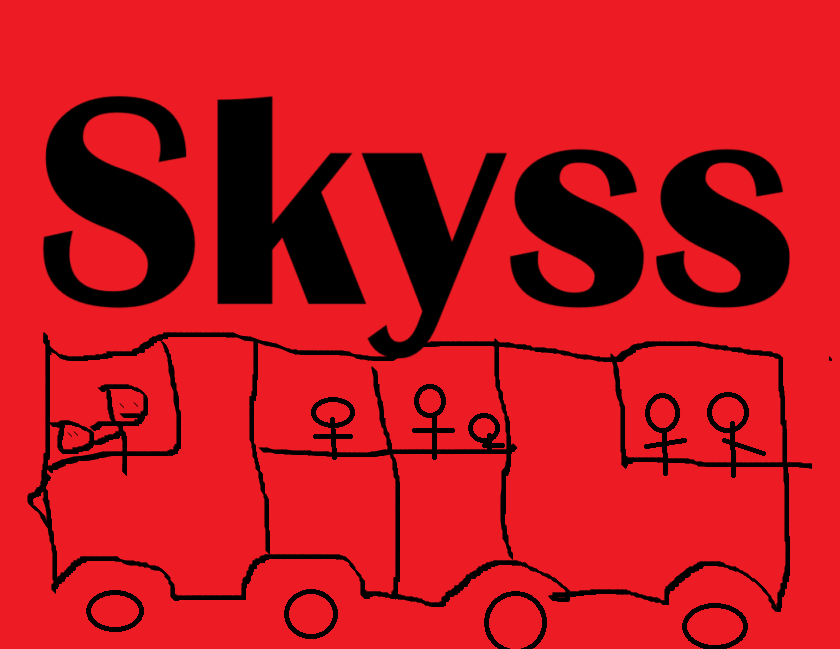
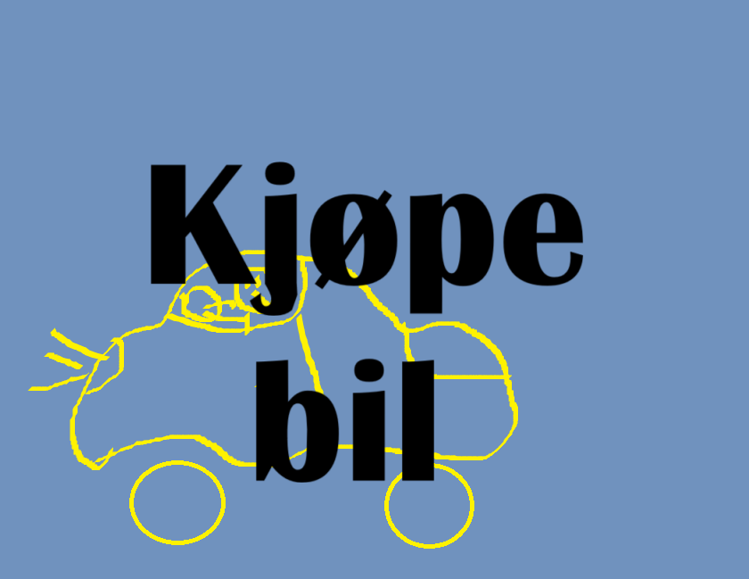
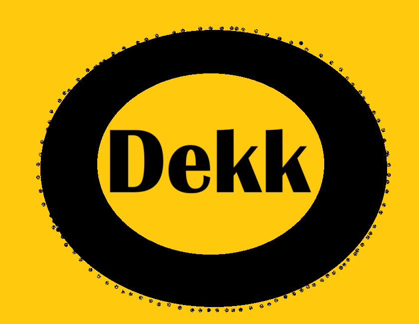

Vis du foretrekker o reise alene ellers kun med de menneskene du ønsker. Da er bil noe før deg. Men hvilken bil er det som passer best her i denne ofte vannfylte byen? Vi anbefaler en liten Toyota. Gjerne i fargen rød ellers gul fordi at få lit mer farge i den allerede blågrønne byen. Vis du liker elbiler har Bergen godt med ladestasjoner. Uansett bilvalg må du ha både sommerdekk og vinterdekk. Planerer du at kjøre mye på vinteren kan det vare en god ide å også ha kjettinger da det er forbudt med piggdekk.
Bergen har den beste kollektivtrafikken i hele Vestlandet, kanskje til og med den beste i verden. Fra tidlig morgen til sein kveld kan du alltid tag fram og tilbake kor hen du kommer fra til kor hen du skall. Ikke er det særlig dyrt heller. I dagens moderne bergenske samfunn så trengs ikke lengre papirbillett i fysisk form. Her i Bergen kan du kjøpe og providere billetten din rett i telefon. De vil si vis du lastet ned skyss appen. Du kan også kjøpe billett rett på bussen ellers i maskiner vid vert bybanestop.
|  |  |  |